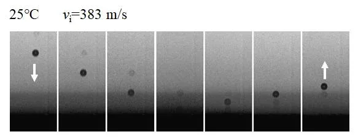
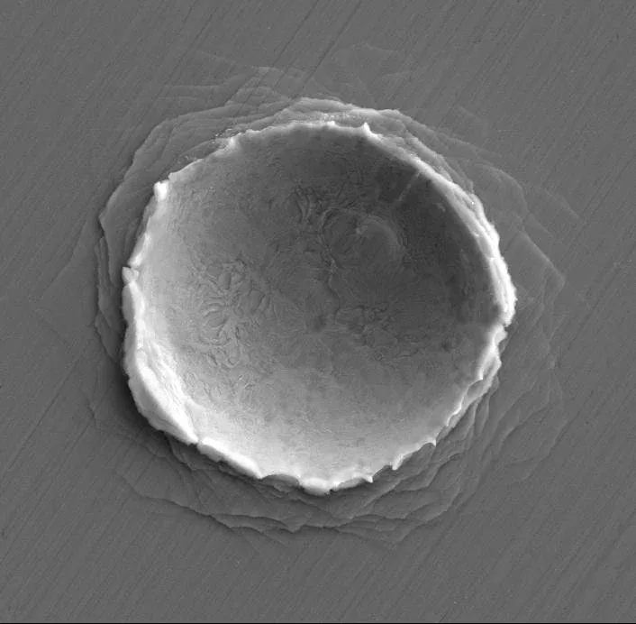
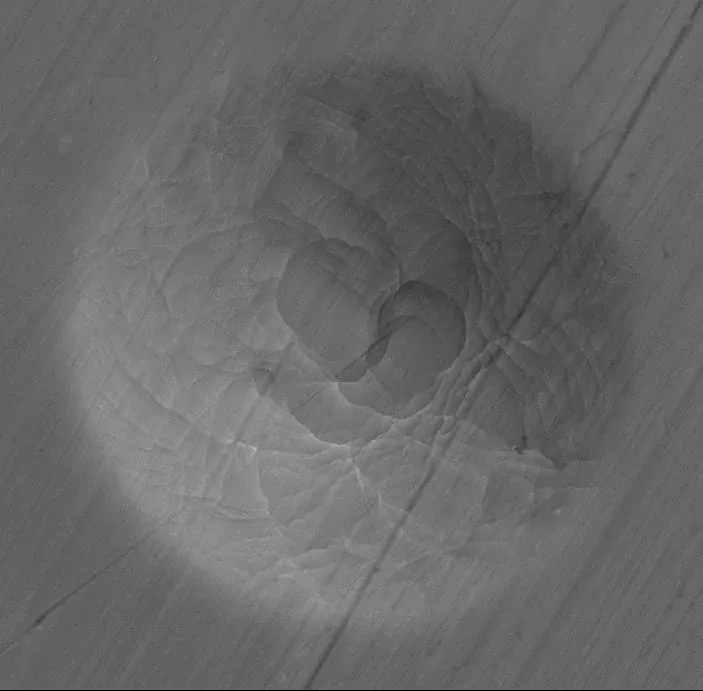
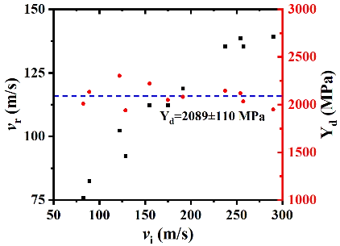
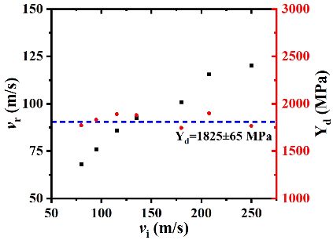
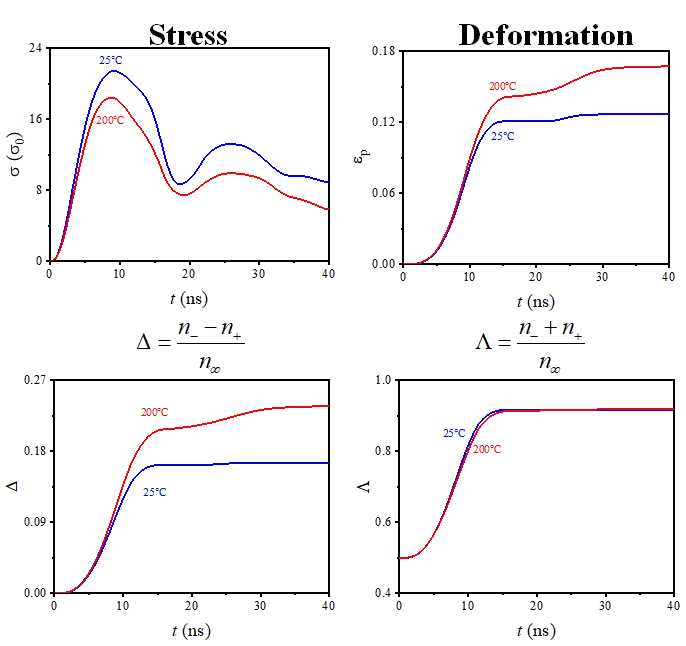
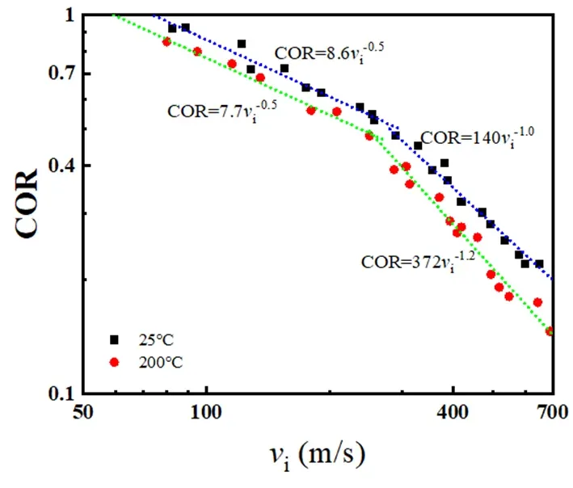
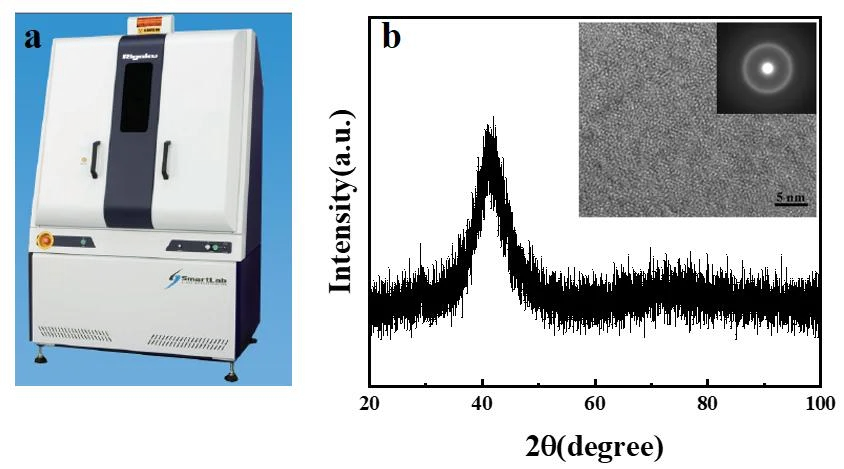

What does heat do to a metal that is also a glass?

The question
Glass shatters; metal bends. A metallic glass is a metal whose atoms are frozen in disorder, like a glass, so it is unusually strong. But heat it toward its glass transition and it may start to flow.
My question: when a tiny particle hits it at hundreds of metres per second, does heat make a metallic glass harder, like a metal, or softer, like a glass?
The method
A 7 ns, 532 nm laser pulse ablates a gold film and launches a 30 µm silica particle at 1–1000 m/s. A camera at up to five million frames per second records the impact and rebound, and a PID controller holds the target within ±1 K at 25, 100 or 200 °C.
I prepared and characterised every sample, ran every impact, and measured the craters by SEM and confocal microscopy.

The finding
Softer, and more like a fluid. From 25 to 200 °C the glass absorbs more of the impact energy, its dynamic yield strength falls by 10.4%, and the crater rim no longer stays neat: it splashes outward like a viscous liquid.


Left of the line: a crater at 25 °C, with a regular rim. Right: at 200 °C, a splash-like pile-up.


Beyond
Why does it happen? I built a quarter-symmetric ABAQUS model with 1.35 million elements and a coupled shear-transformation / free-volume law. It reproduced the measured crater and showed the mechanism: at 200 °C the contact lasts longer, stress is lower, and many more shear transformation zones switch on.


